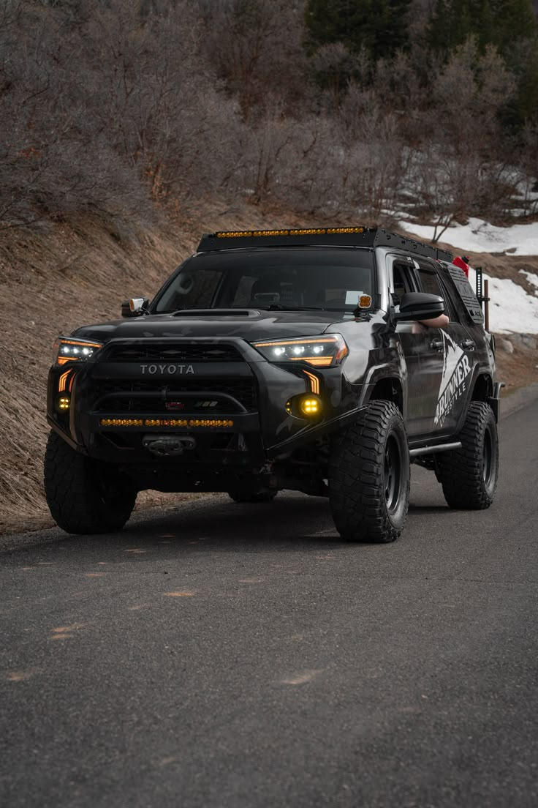
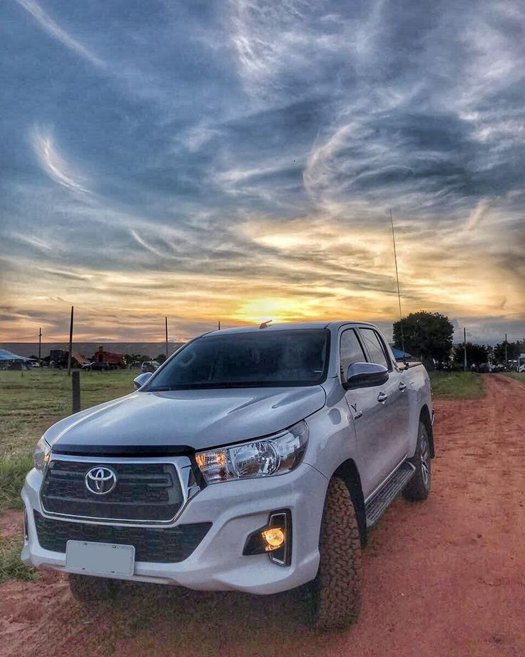
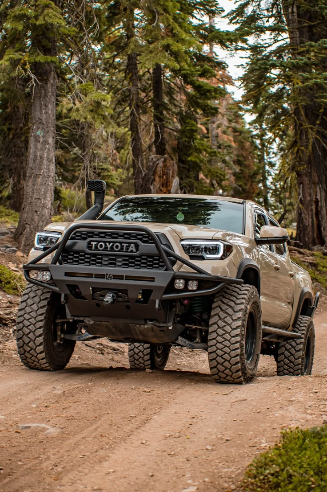
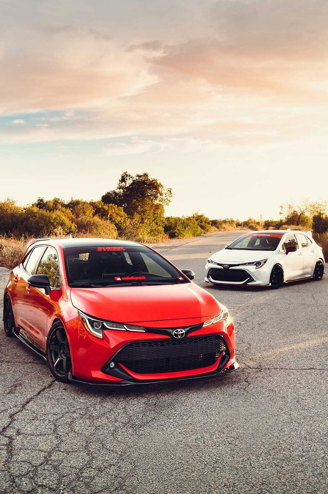
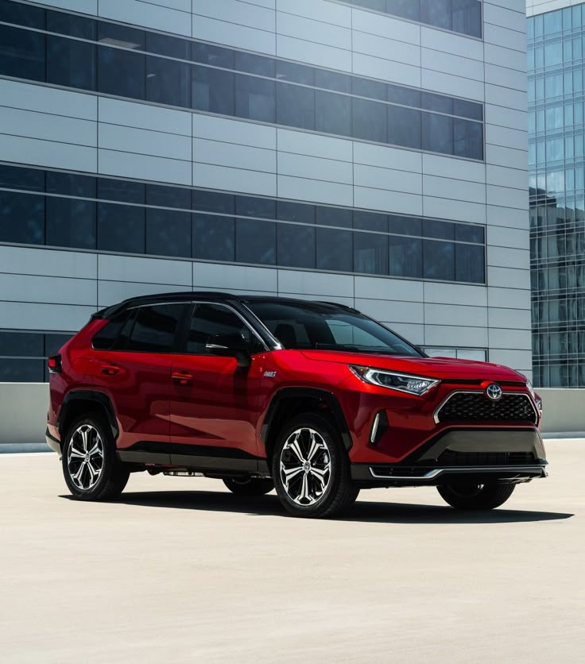
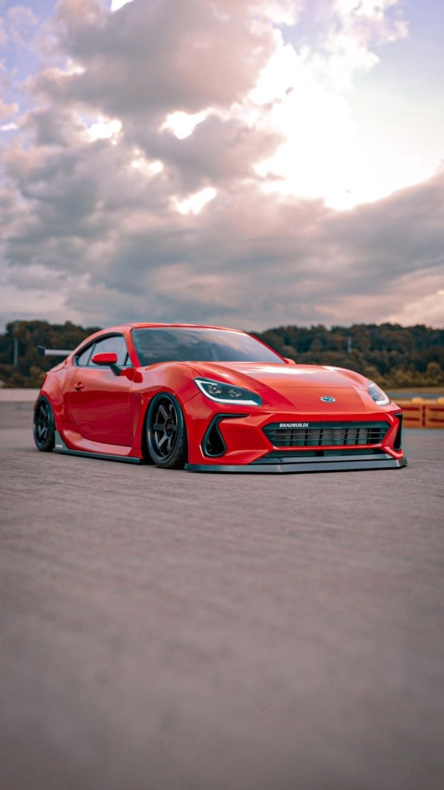
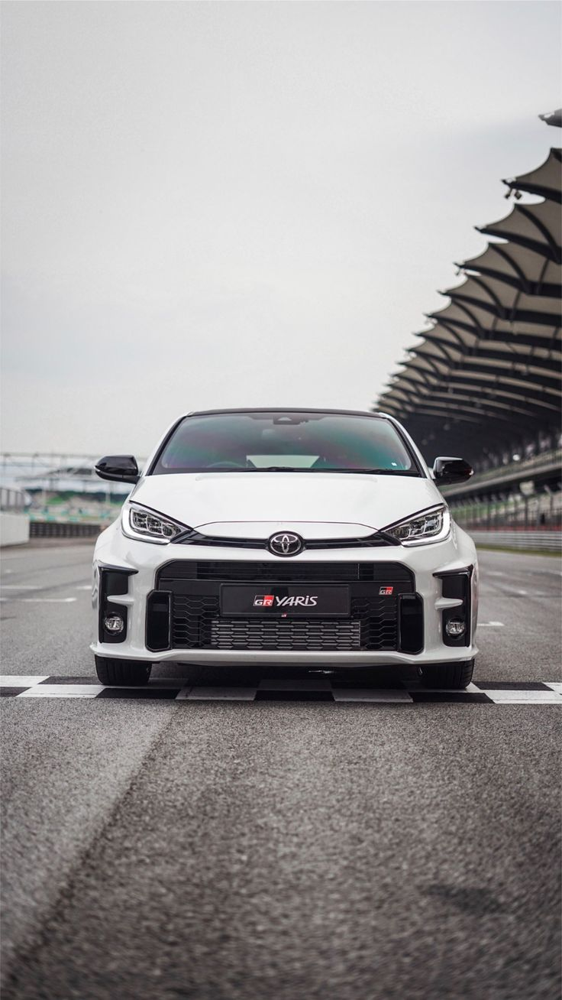
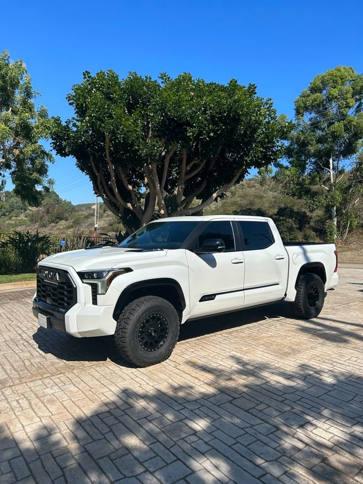

Toyota 4Runner
- Capacidad del tanque: 80 litros
- Tipo de combustible: Gasolina
- Tipo de combustible: Gasolina
- Motor: 3956cc V6 24V DOHC Dual VVT-i
- Potencia: 271 hp a 5600 rpm
- Capacidad de pasajeros: 7
- Llantas: 245/70 R17
- precio a partir de los Q240,000.00

Toyota Hilux
- Diseño exterior fuerte y interior premium
- Capacidad de adaptación a diferentes climas terrenos y usos
- Desempeño sobresaliente fuera de los caminos pavimentados
- Pantalla multimedia de 8" con funciones para controlar el audio y las llamadas
- Motor 2.8l con 204 CV
- precios a partir de Q371,990.00

Toyota Land Cruiser
- Motor: Turbo Diesel Intercooler de 6 cilindros con 304 caballos de fuerza
- Sistema de suspensión mejorada dinámica e-KDSS
- Transmisión: Automática de 10 velocidades más retroceso
- Sistema Toyota Safety Sense: Tecnología que reduce los accidentes
- precios a partir de Q 515,490.00

Toyota Tacoma
- Motor turbo i-FORCE de 2.4 litros
- Capacidad de remolque de hasta 6,500 lb
- Pantalla multimedia de 8" o 14"
- Configuraciones de tracción 4x2 y 4x4
- Cabina doble de cuatro puertas y nueva XtraCab de dos puertas
- A partir de Q210 000, una excelente inversión para aventura y trabajo.

Toyota Corolla
- Motor eficiente que ofrece un excelente rendimiento de combustible.
- Estilo moderno y aerodinámico que destaca en la carretera.
- Pantalla táctil de 7" con conectividad Apple CarPlay y Android Auto.
- precio a partir de Q 224,580

Toyota Cross
- Motor de 2.0 litros con 169 hp y 151 lb-pie de torque.
- Transmisión variable continua (CVT) para una conducción suave.
- Buen rendimiento de combustible, ideal para viajes urbanos y de carretera
- El precio base comienza desde Q 276,790.00, dependiendo de la versión y equipamiento.

Toyota GR86
- Motor de 2.4 litros con aproximadamente 228 hp
- Tracción trasera (RWD) para una experiencia de conducción deportiva
- Asientos deportivos y materiales de alta calidad, con opciones de tapicería en Ultrasuede
- MSRP inicial alrededor de $30,000, dependiendo de la configuración y opciones.

Toyota Yaris
- Motor de 1.5 litros de 4 cilindros con aproximadamente 106 hp
- Transmisión automática CVT para una conducción suave y eficiente
- Pantalla táctil de 7" con conectividad Apple CarPlay y Android Auto.
- Rango de precios accesible, ideal para compradores de primer auto o quienes buscan economía

Toyota Tundra
- Opciones de motor V6 biturbo de 3.5 litros, con hasta 389 hp y 479 lb-pie de torque
- Transmisión automática de 10 velocidades para un rendimiento suave y eficiente
- Pantalla táctil de 14" con conectividad Apple CarPlay y Android Auto.
- Disponible en diferentes niveles de equipamiento, incluyendo versiones híbridas.
- precio a partir de Q290,000.00